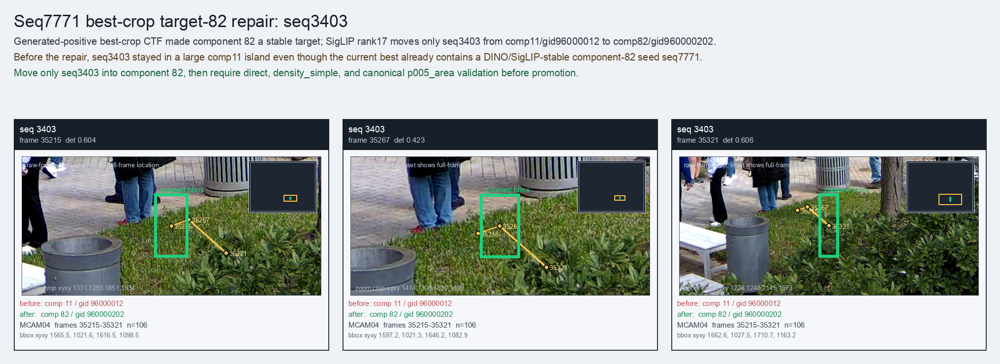

Seq7771 best-crop target-82 repair: seq3403
Generated-positive best-crop CTF made component 82 a stable target; SigLIP rank17 moves only seq3403 from comp11/gid96000012 to comp82/gid960000202.
Before
component 11, gid 96000012, component_size 183
component 11, gid 96000012, component_size 183
After
component 82, gid 960000202, component_size 21, decision_status subpart_reassign
component 82, gid 960000202, component_size 21, decision_status subpart_reassign
Evidence
target_sim=0.6790, target_margin=0.0375, source_rest_margin=0.6300
Raw frame
available
target_sim=0.6790, target_margin=0.0375, source_rest_margin=0.6300
Raw frame
available
Failure and fix
Old failure: Before the repair, seq3403 stayed in a large comp11 island even though the current best already contains a DINO/SigLIP-stable component-82 seed seq7771.
New implementation: Move only seq3403 into component 82, then require direct, density_simple, and canonical p005_area validation before promotion.
BBox evidence

Moved tracklets
| seq | video | gid | component | frames | dets |
|---|---|---|---|---|---|
| 3403 | vlincs_MS01_MC0001_MCAM04_2024-03-Tc6 | 96000012 -> 960000202 | 11 -> 82 | 35215-35321 | 106 |